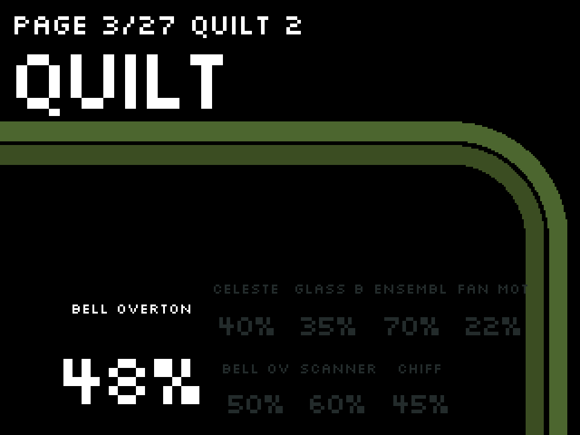
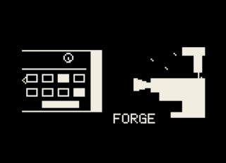
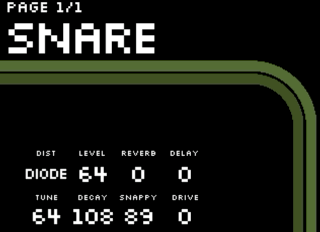
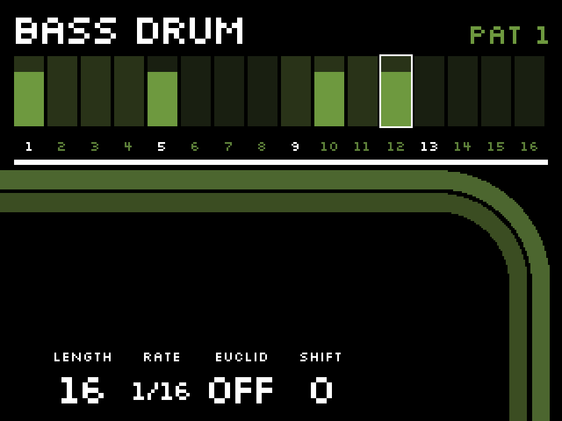
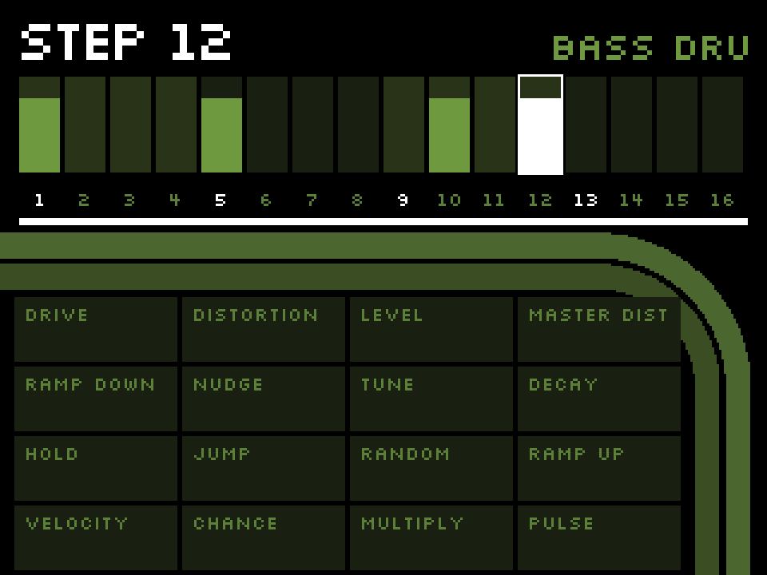
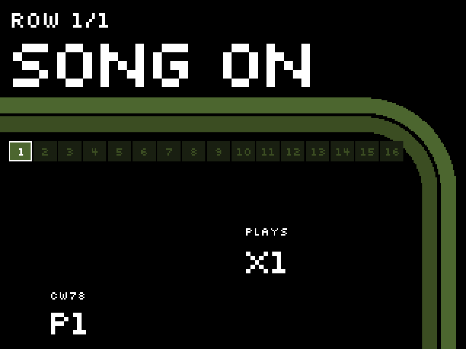
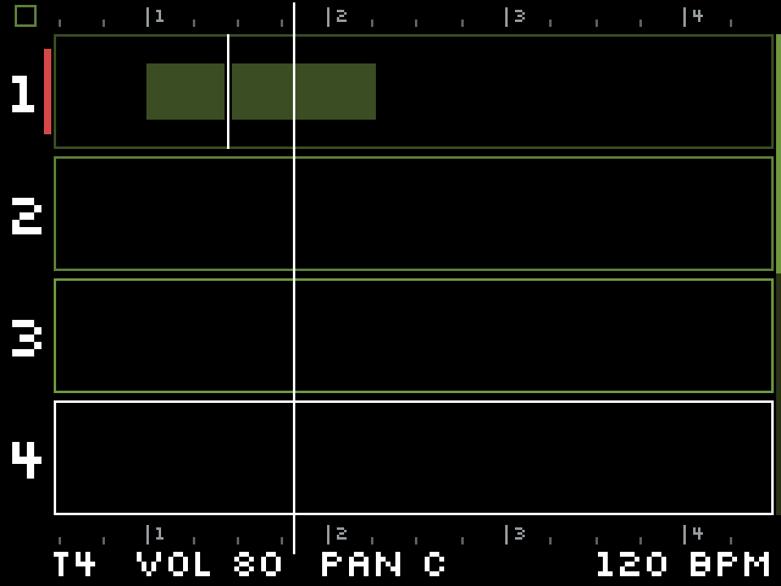
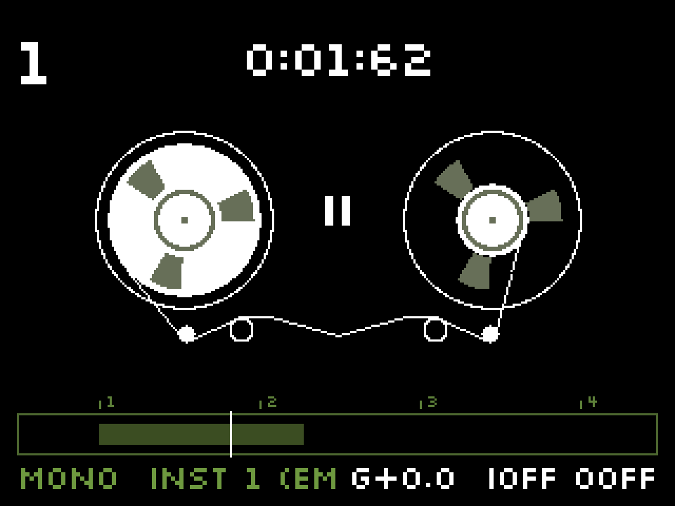
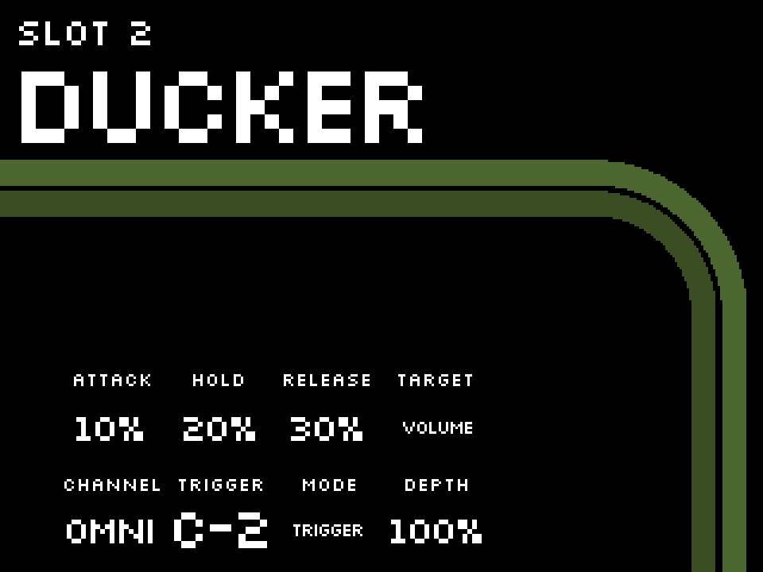

CONSOLE.
An 8-track groovebox and tape recorder for the Sample.
Choose from dozens of synths and drum machines, sequence them in detail, arrange a song, and record it all to tape. It runs from the SD card on the Sample's own screen, pads and knobs.
MPC Sample firmware 1.3.0 · November 2026

- 8
- Tape tracks
- 11
- Drum machines
- 53
- Synths
- 64
- Steps per pattern
A whole studio in one app
Console turns the Sample into a self-contained music machine. You make the sounds, program the patterns, arrange them into a song and record the result, without leaving one app.
Every instrument has its own sequencer, its own effects and its own place on the tape, so what you hear is what you record.

From a sound to a finished track
Four steps, in the order you'll usually use them.
-
Choose your sounds
Load a synth or drum machine into any of eight slots. Each one has pages of settings to shape with the knobs, and you can save your sounds as presets.

A drum machine's sound page -
Sequence them
Program patterns up to 64 steps long. Every drum has its own lane, and any step can carry its own settings, so each hit can sound a little different.

The sequencer 
Settings for one step -
Arrange a song
Chain your patterns together in song mode and play the whole arrangement through.

Song mode -
Record to tape
Everything plays through eight tape tracks. Record, loop and overdub, then splice, cut and move sections around like a tape machine. When it's done, export it to the SD card.

The tape 
One track, up close
What's inside
Instruments
11 drum machines and 53 synths, plus a sampler for your own samples. Save and recall presets.
Detailed sequencing
Per-drum lanes, parameter locks and step settings such as velocity, chance and length.
Movement
LFOs and an arpeggiator add motion to any instrument.
Effects
Reverb and delay sends and insert effects on every instrument, plus inserts on the whole mix.
Tape editing
Splice, copy, cut, loop and overdub, on mono or stereo tracks.
Mixer and export
Levels, pan and sends for every track. Export stems and a final mix as wav, aiff, flac or m4a.

Because the effects sit in the signal path, they are part of what lands on the tape. Set up a sound once and every recording carries it.
How to drive it
Every control, page by page. Read it here with search, or keep the PDF.
Install
Copy it to the SD card
Download and unzip. Drop the 2 folders onto the root of your Sample's SD card, then insert it and boot.
https://github.com/briwil/console-mpc/releases/latest/download/Console-MPC.zip